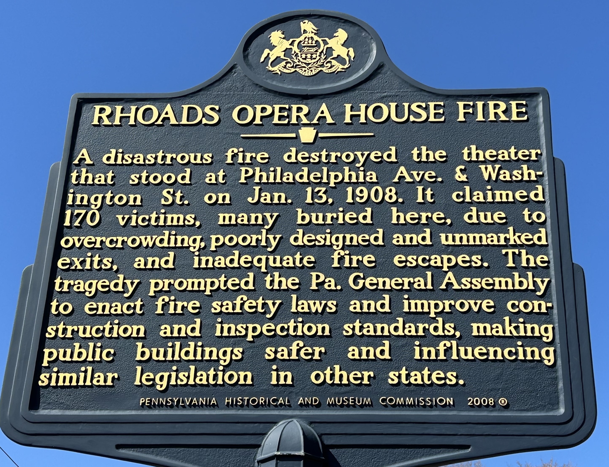
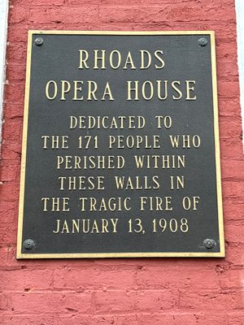

Verna HARTMAN was an aunt of Titus HARTMAN.
On January 13, 1908, Verna perished in the Rhoads Opera House fire in Boyertown, PA, together with her cousins Carrie L. HARTMAN (daughter of Franklin H. HARTMAN) and Charles G. HARTMAN (son of Daniel H. HARTMAN). All three were teenagers.

